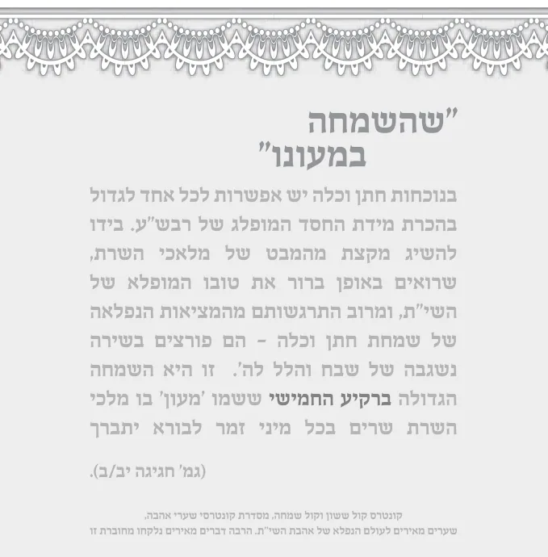
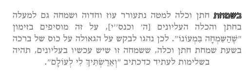

ענינה ומהותה
שאלות
שהשמחה במעונו. היכן נמצא המעון של ה'? ומי נמצא שם?
בוזאת הברכה אומרים "מענה אלוקי קדם" מדוע לא אומרים מעון לאלוקי קדם?
מדוע דווקא בשמחת נישואין יש שמחה במעונו?
מספר המהרש"ל (בספרו ים של שלמה בבא קמא פרק ז,לז): פעם אחת עשינו סיום מסכת והוריתי לומר בברכת המזון "שהשמחה במעונו", דאין לך שמחה יותר לפני הקב"ה, אלא שמחה ורינה של תורה, דאין להקב"ה בעולמו אלא ד' אמות של הלכה. ונתבלבל השמחה במהומות גדולות, על ידי סיבות קשות. ותליתי הסרחון בי, שעברתי על דברי רבותיי, שלא שמעו מעולם דבר זה. על כן לא כתבו אלא בחתונה ... אבל במצות אחרינא לא, ובוודאי כל דבריהם בקבלה, ובסודות פנימיות, על כל שיחה ומלה. |
תשובות
ברקיע החמישי ששמו 'מעון' בו מלכי השרת שרים בכל מיני זמר לבורא יתברך (גמ' חגיגה יב/ב).
מענה - פירושו מעון ה' – שמעון נמצא ברקיע החמישי.
מלאכי השרת רואים באופן ברור את טובו המופלא של השי"ת, ומרוב התרגשותם מהמציאות הנפלאה של שמחת חתן וכלה - הם פורצים בשירה נשגבה של שבח והלל לה'.

